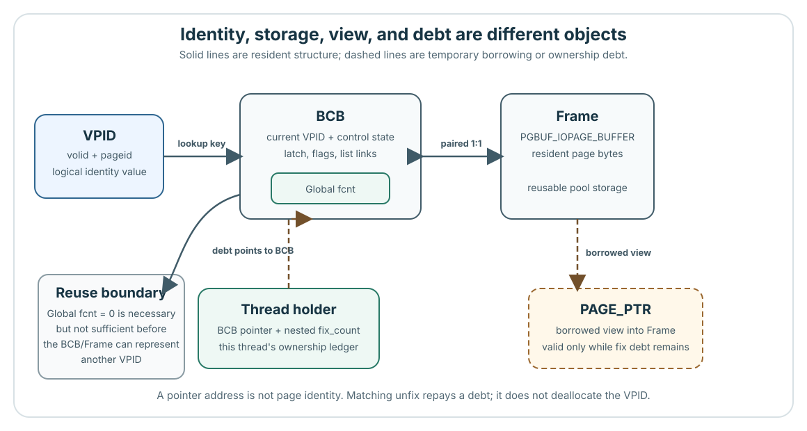

Ownership 개요

먼저 정확한 이름으로 대상을 구분한 뒤, 현재 BCB/frame 상태를 네 좌표의 tuple로 설명하세요.

VPID | Logical identity 값이며, resident가 아니어도 존재할 수 있습니다. |
|---|---|
| BCB | 재사용되는 pool control입니다. 현재 identity는 바뀔 수 있습니다. |
| Frame | 재사용되는 pool byte 영역입니다. 내용은 resident generation을 따라갑니다. |
PAGE_PTR | 빌려 쓰는 view입니다. 대응하는 unfix에서 사용이 끝납니다. |
Global fcnt | 하나의 BCB에 부여된 모든 fix debt입니다. |
| Thread holder | 이 thread가 가진 BCB debt와 중첩 fix_count입니다. |
| 주장 | Pinned source | Evidence level |
|---|---|---|
Holder, global fcnt, BCB, frame의 연결 관계 | page_buffer.c:460–555 | Verified mechanism |
| BCB/frame table의 일대일 pairing | page_buffer.c:5559–5660 | Verified mechanism |
| Normal fix 성공으로 얻은 borrowed view와 release debt | Core의 canonical 설명 | Interface contract |